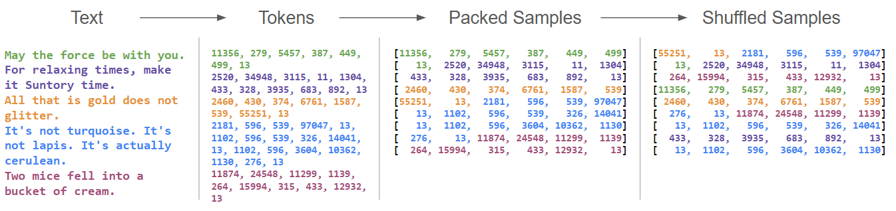
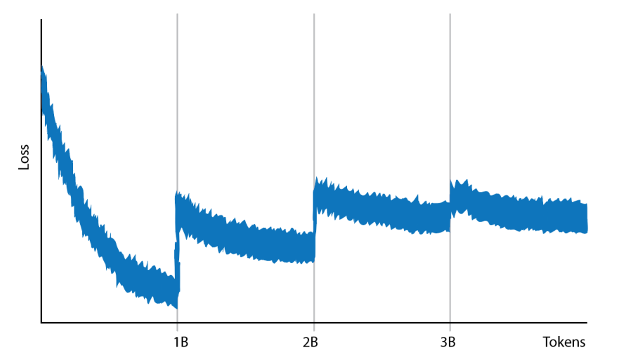
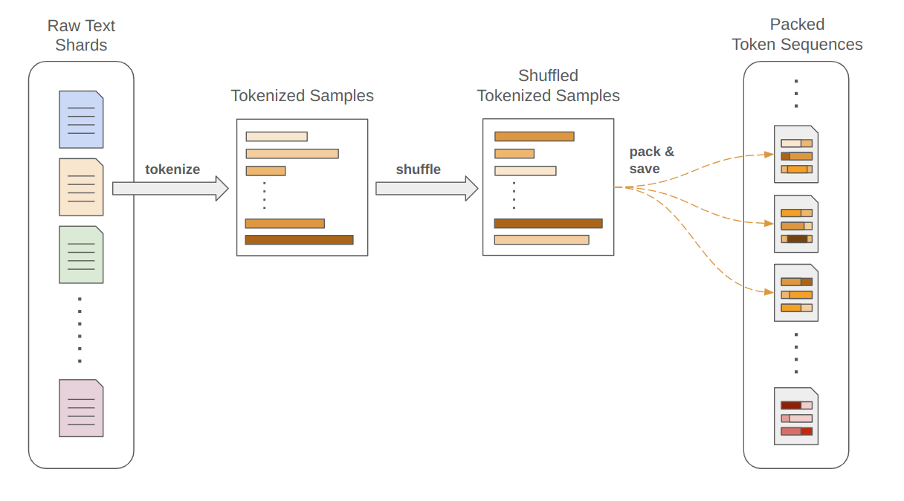
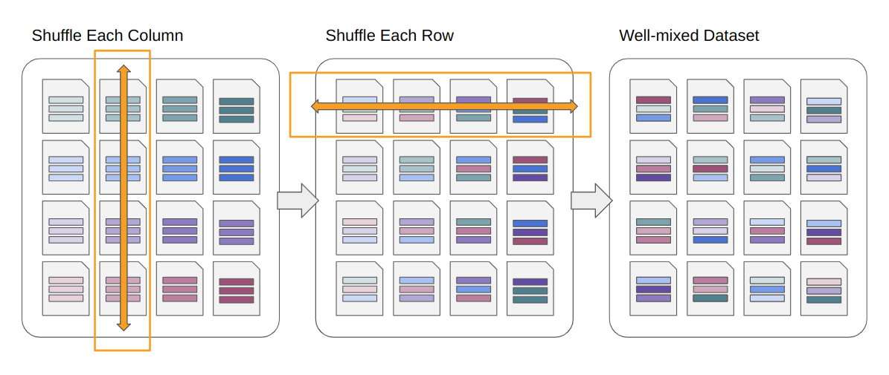

On Shuffling Tokens
Preparing Trillion-Token Datasets
A few years ago I was fortunate to work on APL’s first efforts to train language models from scratch, and my role was to prepare the pretraining dataset and write our distributed training routines. Both of these rely heavily on practical engineering knowledge that is unlocked by hands-on experience, and no matter how many papers you read on transformer-based models, there is still a gap to putting things into practice. Having concurrently taught a graduate course on building transformers, I can tell you wholeheartedly that lecture slides and block diagrams only get you so far.
Since APL recently released a news article about our efforts, I wanted to write a short post that dives into decisions we made to prepare and organize our dataset. This is a topic that can be easy to dismiss when first learning about LLMs or digesting a paper, and feels orthogonal to research results. However, when actually pretraining a model yourself, data prep is an entire project unto itself, with expensive consequences if done incorrectly.
The routines described here are also available in a code repository, TokenShard, which is a small python library that integrates with HuggingFace to prepare, organize, and track text datasets for LLM training.
Tokens
First a quick review of what I mean by "data prep". To train an LLM, you need text. Lots of text. A serious LLM training attempt will use datasets measured in trillions of words, and the first problem with this is that it is incredibly hard to get your head around the concept of "one trillion".
Here is a fun fact: Assuming one single-spaced page in 12pt font contains 500 words, and a page of paper is 0.004 inches thick, then printing out one trillion words would be a stack of paper about 126 miles high. Our training datasets (2-3 trillion words), would reach the international space station printed out. This is not very helpful other than to illustrate that reasoning about things of this magnitude is often a losing battle.
This is especially true when trying to wrangle text data into nice batches of tokens for training. Our text needs to go through three key transformations before training can begin: (1) Tokenization: we need to convert our text to integers that map to a known vocabulary (essentially, the list of words and word chunks that the model treats as elemental units of language), (2) Packing: we need to take our sequences of tokens, which range from just a few words long to entire novels, and split/combine/reshape then into sequences of a fixed length, so that we can group together many samples into nicely-shaped batches, and (3) Shuffling: we need to make sure that when we assemble a batch of training data, it represents a diverse selection of text instead of, say, 64 consecutive sentences from the same source.

Good shuffling should actually happen in two places: Firstly, when we are packing several examples into the same training sequence to fill out a context window, we want these to be non-sequential. Secondly, when we are group several context-window-sized examples together, they should be diverse.
These processing steps, combined with huge amounts of data that are hard to comprehend, leads to fundamental questions. How long does it take to convert trillions of words into tokens? What do I do with data that is tokenized but not yet packed? What about data that is packed? And finally, how do I shuffle something that is orders of magnitude larger than available RAM?
The Dangers of Poor Shuffling
The most difficult step above (for me) was shuffling. Tokenizing and packing are relatively fast and highly parallelizable (which still means many days of melting cpus at this scale). But shuffling this much data is kind of a headache.
I will note here that we opted to shuffle everything ahead of time as much as possible to maximize training throughput. There are always strange on-the-fly things that can be done during training, but these can easily become a bottleneck (i.e. loading/processing data can be slower than feeding it through the model). We played with this a little bit to avoid mixing data sources on disk (see below), but otherwise avoided processing "online" during training.
An easy shuffling hack that sounds appealing is to only shuffle data within smaller blocks of the dataset, or within some sort of rolling buffer that fits in RAM. If shuffling the whole dataset is hard, what if you just train on one shard of the dataset at a time, and shuffle each one? This would still be a mix of potentially billions of tokens- surely that satisfies the requirements of showing the model diverse data?
Sort of. Let’s see what happens if we train an LLM on part of the Dolma dataset, pulling in shards of one billion tokens at a time and shuffling each one when we first load it up. We get a loss curve that looks like this:

We get a major bump in loss every time a new shard is loaded, and then the loss gradually improves within the training of that shard. Overall, the training is inconsistent and unstable.
What’s happening above is that each shard, even at the size of one billion tokens (or more), has a different distribution of data. The first shard might be almost entirely prose, and the next might be a mix of prose and code. It might be more subtle than this- maybe one shard is mostly C code and the next is stack overflow questions about C. However, this is still a distribution shift, and the model has to re-adjust each time this shift happens. Instead of training our model on one body of text, we are accidentally training it on many sequential mini-datasets that are all slightly different.
To fix this, we would need to process the dataset in shuffled blocks that are large enough to capture the full distribution of our training corpus. Taking this as far as possible- the best fix is to shuffle the whole dataset. This is an example of an engineering choice that seems very reasonable but doesn’t quite fit with the reality of the dataset size. Any one slice of the un-shuffled dataset, even measured in billions of tokens, is such a small fraction of the whole that it is not representative of the overall mix.
Shuffling, but Bigger.
So we need to bite the bullet and shuffle the whole thing. To do this, we came up with a method of mixing up data in two stages: Firstly, we shuffle each shard within itself, as in the above example except entirely upstream of dataset training. This is pretty easy since each shard can be loaded into RAM: load in the shard, shuffle the order of all the examples, and save it back out.
At this point we also tokenized and packed each shard into samples of the given context length. This could have been done a different time, but it is nice to have everything from here onwards have a fixed size.

If we then trained on these shards, we would have the same failure case as above: each shard is not diverse enough on its own. The critical step is to then take several shards, mix them together, and re-save them as several distinct pieces. If this is performed repeatedly, the entire dataset eventually becomes mixed together even though only a fraction of it is handled (put into RAM) at a time.
To be more principled about this process, we imagined breaking our dataset into a 2D grid of shards, and then mixing each column followed by each row. This "grid shuffling" technique allows thorough mixing with only two passes over the dataset.
The only caveat to this system is that it is helpful if shards are really small. Rather than sharding the data so that one or two shards can barely fit in RAM, we want to load an entire "column" or "row" of the grid, so many smaller shards are preferred:

Starting, Stopping, and Fast-Forwarding
Finally, you have all the data tokenized, packed, and well-shuffled. You start your training run. It runs for two weeks, and then a node goes offline. The training job crashes. When resources come back online, you need to resume.
Fortunately, you were logging all sorts of metrics, and you know that your last checkpoint was at 1,350,000,000 tokens. Great. So you just need to start again, and skip over the first 1.35 trillion tokens in your dataset.
Do you know how long it takes a HuggingFace dataloader to load, bypass, and dump 1.35 trillion tokens? It takes a long time. It takes much longer than, say, your GPUs want to hang out and ping each other waiting for something to do. It takes longer than your cluster likes having a giant job online and showing 0% utilization. It is an uncomfortable experience.
A nice way to mitigate this, also included in the TokenShard library, is to cyclically reorder your shards when resuming. If you have shards A, B, C, D, and E, and training is stopped while pulling samples from shard C, then when you resume you tell the dataloader that your files are C, D, E, A, and B. You still need to fast-forward a little bit, but most of the work is handled by file order.
The amount of time you need to spend fast-forwarding is now dependent on the size of your shards, and this is another reason to prefer many tiny shards over few large ones. In practice, we often divided a dataset into thousands of shards, tuned so that we could reach any exact point in the dataset in only a few minutes.
Interleaving
In our training we also wanted to finely track and control the amount of data from each of several source datasets, so we really performed the above process for each of ~20 distinct pools of data and batched together examples from each at training time. While any one batch is a stochastic sampling from these source datasets, on average you can tightly control ratios of source data. For example, you may want to make sure that you train on a 25/75 split of code to prose, or that 10% of your data comes from technical sources.
Since these ratios will not exactly match the underlie dataset sizes, our dataset samplers "roll over" as needed. This becomes a great way to upsample high-value data. For example, if you consider novels to be the gold standard of well-written text, you could upsample Project Gutenberg such that it is seen several times over during training, while another pool of data is only seen fractionally.
We also tracked validation loss for each source separately, and was very illuminating. While many published LLMs will just report a single aggregate loss, this represents average performance across many areas. Highly structured domains like code will naturally have a much lower loss than prose, which itself is lower than unstructured text like forum posts.
This also means that aggregate loss is tied to dataset composition. A great way to lower your loss is to add more code to your dataset :) While LLM losses get better and better as the field advances, part of this is actually just due to the underlying data being easier to predict as there is an increased focus on building coding assistants.
Beyond Text
While most of my current work involves VLAs, understanding the practice of large-scale data preparation pays dividends in other modalities, especially as those modalities getting increasingly expensive. It would be nice to expand the TokenShard library to other data types, although first I would need enough robotics data for that to be worthwhile… maybe one day.
Recent Posts:
On Shuffling Tokens
Preparing Trillion-Token Datasets
May 12, 2026
LLMs, MatSci, NeurIPS 2025
Coupling GPT with Materials Synthesis Simulation
March 12, 2026
GAIL with Pixels Only
Rewarding for Visual Fidelity
May 16, 2025
More Posts